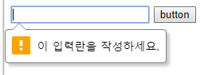

<form> 폼 만들기
<form>태그는 폼을 만드는 가장 기본적인 태그로 <form>태그와 </form>태그사이에 여러 폼 요소와 관련된 태그를 넣습니다.
<form [속성="속성 값"]>여러 폼요소</form>
<form>에서 사용하는 속성들은 아래와 같습니다.
| 속성 | 설명 | |
|---|---|---|
| method | 사용자가 입력한 내용들을 서버쪽 프고르매으로 어떻게 넘겨줄지 지정합니다. | |
| 속성값 | get - 주소 표시줄에 사용자가 입력한 내용이 그대도 드러납니다. | |
| post - 대부분 이 방식을 사용합니다. 사용자의 입력을 표준 입력으로 넘겨주기 때문에 입력 내용이 길이에 제한을 받지 않고 내용이 드러나지 않습니다. | ||
| name | 폼의 이름을 지정합니다. 한 문서 안에 여러 개의 <form>태그가 있을경우, 폼들을 구분하기 위해 사용합니다. |
|
| action | <form>태그안의 내용들을 처리해 줄 서버 상의 프로그램을 지정합니다. |
|
| target | <action>태그에서 지정한 스크립트 파일을 현재 창이 아닌 다른 위치에 열도록 지정합니다. |
|
<label>
레이블(label)이란 입력 창 옆에 '아이디'나 '비밀번호'처럼 붙여 놓은 텍스트를 말합니다.
<label>태그를 사용하면 폼 요소와 레이블 텍스트가 서로 연결되어 있다는 것을 브라우저가 알 수 있습니다.
<!-- 기본형 -->
<label [속성="속성 값"]>레이블텍스트<input ....></label>
<!-- id 로 연결되어 있는경우 -->
<label for="id이름">
<input id="id이름" [속성="속성 값"]>
</label>
id이름은 유일해야하며, id이름이 있는 레이블과 input이 떨어져있어도 서로 연결되어 있으며, 화면낭독기도 그렇게 읽어줍니다.
라디오버튼 체그박스와 사용하는 레이블
라디오버튼(radio)이나 체크박스(checkbox) 등은 레이블을 사용하지 않으면 클릭요소가 작아서 모바일에서는 불편합니다.
아래 예제의 경우 체크박스만 클릭을 해야 선택이 되어 집니다.
<ul>
<li><input type="checkbox">선택1</li>
<li><input type="checkbox">선택2</li>
<li><input type="checkbox">선택3</li>
</ul>
- 선택1
- 선택2
- 선택3
하지만 레이블로 감싼경우 텍스트 영역 전체를 클릭해도 선택이 되어집니다.
<ul>
<li><label><input type="checkbox">선택1</label></li>
<li><label><input type="checkbox">선택2</label></li>
<li><label><input type="checkbox">선택3</label></li>
</ul>
폼요소 그룹으로 묶기
폼을 사용하다보면 폼 안에서 여러구역을 나누어 표시해야 할때가 있습니다. 이럴때 <fieldset>, <legend>태그를 사용합니다.
<fieldset> 은 폼들을 하나의 그룹을 묶을때 사용하며 기본 스타일은 외곽선을 그려줍니다.
<legend>는 묶은 그룹의 제목을 붙여 줍니다.
아래는 개인정보와 로그인정보 등으로 묶은 폼의 예입니다.
<form>
<fieldset>
<legend>개인정보</legend>
<ul>
<li><label for="name">이름</label><input type="text" id="name"></li>
<li><label for="mail">메일주소</label><input type="text" id="mail"></li>
</ul>
</fieldset>
<fieldset>
<legend>로그인정보</legend>
<ul>
<li><label for="id">아이디</label><input type="text" id="id"></li>
<li><label for="pwd">비밀번호</label><input type="text" id="pwd"></li>
</ul>
</fieldset>
</form>
사용자 입력을 위한 <input> 태그
<input>태그에 넣을 수 있는 항목은 아이디, 비번, 이메일, 전화번호, 날짜, 시간, 이미지, 버튼 등 다양합니다. 이것은 type 속성에 의해 결정됩니다.
기본형
<input type="text">
'type`속성에 사용되는 유형은 아래와 같습니다.
| 유형 | 설명 |
|---|---|
| hidden | 한 줄 짜리 텍스트를 입력할 수 있는 텍스트 상자를 넣습니다. |
| search | 검색 상자를 넣습니다. |
| tel | 전화번호 입력 필드를 넣습니다. |
| url | URL 주소를 입력할 수 있는 필드를 넣습니다. |
| 메일 주소를 입력할 수 있는 필드를 넣습니다. | |
| password | 비밀번호를 입력할 수 있는 필드를 넣습니다. |
| datetime | 국제 표준시(UTC)로 설정된 날짜와 시간(연,월,일,시,분,초,분할 초)를 넣습니다. |
| datetime-local | 사용자가 있는 지역을 기준으로 날짜와 시간(연,월,일,시,분,초,분할 초)를 넣습니다. |
| date | 사용자 지역을 기준으로 날짜(연,월,일)를 넣습니다. |
| month | 사용자 지역을 기준으로 날짜(연,월)를 넣습니다. |
| week | 사용자 지역을 기준으로 날짜(연,주)를 넣습니다. |
| time | 사용자 지역을 기준으로 시간(시,분,초,분할 초)을 넣습니다. |
| number | 숫자를 조절할 수 있는 화살표를 넣습니다. |
| range | 숫자를 조절할 수 있는 슬라이드 막대를 넣습니다. |
| color | 색상표를 넣습니다. |
| checkbox | 주어진 항목에서 2개 이상 선택 가능한 체크박스를 넣습니다. |
| radio | 주어진 항목에서 1개만 선택할 수 있는 라디오 버튼을 넣습니다. |
| file | 파일을 첨부할 수 있는 버튼을 넣습니다. |
| submit | 서버 전송 버튼을 넣습니다. |
| image | submit 버튼 대신 사용할 이미지를 넣습니다. |
| reset | 리셋 버튼을 넣습니다. |
| button | 버튼을 넣습니다. |
HTML5에서 새로 채택된 속성들은 브라우져마다 지원여부가 다릅니다. http://caniuse.com 에 접속후 index of features 링크를 클릭하면 HTML5 항목에 대한 부분을 볼 수 있습니다. 예를들어 Date and time input types 를 클릭하면 지원하는 브라우져 버젼에 대해서 나옵니다. 빨강색은 미지원, 초록색은 지원, 녹색은 부분지원을 뜻합니다.
hidden 히든필드 만들기
히든(hidden) 필드는 화면상에는 보이지 않지만 사용자가 입력을 마치고 폼을 서버로 전송할때 함께 전송되는 요소입니다. 사용자에게는 굳이 보여주지 않고 관리자가 알아야 하는것을 히든 필드로 사용합니다.
<input type="hidden" name="이름" value="서버로 넘길 값">
text 텍스트 필드 만들기
한줄짜리 일반 텍스트를 입력하는 필드입니다. 주로 아이디, 이름, 주소 등 텍스트를 입력할때 사용합니다.
<input type="text" [속성="속성 값"]>
텍스트 필드에서 사용할 수 이쓴ㄴ 속성은 다음과 같습니다.
| 속성 | 설명 |
|---|---|
| name | 텍스트 필드를 구별할 수 있도록 이름을 붙입니다. |
| size | 텍스트 필드의 길이를 숫자로 지정합니다. |
| value | 텍스트 필드 요소가 화면에 표시될때 텍스트 필드 부분에 표시될 내용입니다. |
| maxlength | 텍스트 필드에 입력할 수 있는 최대 문자 개수를 지정합니다. |
password 비빌번호 입력란 만들기
비밀번호 입력란을 만듭니다. 다른 필드와는 다르게 사용자가 입력하는 내용이 * 나 . 으로 표시됩니다.
<input type="password" [속성="속성 값"]>
search, url, email, tel 분화된 텍스트 필드
- search - 검색상자 만들기
텍스트 필드를 이용해서 검색할 때 사용합니다. 크롬이나 MS 엣지 브라우져등에서는 검색어를 입력하면 우측에 'x' 표시가 되어 검색어를 지울수 있습니다.
<input type="search">
<input type"submit" value="검색">
- url - 입력란 만들기
텍스트 필드를 기반으로 웹주소를 입력할 때 사용합니다. 이 필드는 반드시 'http://'로 시작하는 사이트 주소를 입력해야 합니다.
<input type="url" [속성="속성 값"]>
- email - 메일 주소 입력란 만들기
기존 HMTL에서는 이메일을 체크하려면 '@'문자가 있는지 체크했습니다. html5에서는 type="email" 로 지정하면 브라우저가 자동으로 메일형식에 맞는지 체크합니다.
<input type="email" [속성="속성 값"]>
- tel - 전화번호 입력란 만들기
텍스트 필드 기반으로 전화번호를 입력할때 사용합니다. 모바일인경우 넘버 키패드가 바로 사용됩니다.
<input type="tel" [속성="속성 값"]>
number 숫자 입력하기
사용자가 입력한 내용을 숫자로 인식합니다. 브라우저에 따라 스핀박스가 표시되기도 합니다.
스핀박스란 입력창 오른쪽에 작은 화살표시를 말합니다. 이 화살표시는 숫자를 증가 또는 감소시킬수 있습니다.
<input type="number" [속성="속성 값"]>
range 슬라이드 막대로 숫자 지정하기
슬라이드 막대를 움직여 숫자 값을 입력하게 할때 사용합니다. 슬라이더의 모습이 브라우저마다 다를수 있습니다.
<input type="range" [속성="속성 값"]>
type="number"과 type="range"필드에서 사용할 수 있는 속성값은 다음과 같습니다.
| 속성 | 설명 |
|---|---|
| min | 필드에 입력할 수 있는 최솟값을 지정합니다. type="range"일때 최솟값은 0입니다. |
| max | 플드에 입력할 수 있는 최댓값을 지정합니다. type="range"일때 최댓값은 100입니다. |
| step | 짝수나 홀수 등 특정 숫자로 제한하려고 할 때 숫자 간격을 지정할 수 있습니다. 기본값은 1이며 생략가능합니다. |
| value | 필드에 표시할 초기값입니다. |
radio, checkbox 라디오버튼과 체크박스 넣기
라디오버튼과 체크박스는 여러 항목중 원하는 항목을 선택할 때 사용하는 폼요소 입니다. 이때 하나만 선택할 경우 라디오버튼을 사용하며, 두개이상 다중선택을 할경우 체크박스를 사용합니다.
라디오버튼은 하나의 항목만 선택할 수 있으므로, 이미 선택되어 있는경우 다른 항목을 선택하면 현재의 항목은 취소됩니다.
라디오버튼과 체크박스에서 사용할 수 있는 속성은 다음과 같습니다.
| 속성 | 설명 |
|---|---|
| name | 라디오버튼이나 체크박스를 구분하기 위해 name 을 사용합니다. 라디오버튼의 경우 하나만 선택하는 것이기때문에 관련 그룹끼리는 같은 name 속성 값을 사용합니다. |
| value | 선택한 라디오버튼이나 체크박스를 서버로 넘겨줄 값을 지정합니다. 이 값은 영문, 숫자이여야 하면 필수입니다. |
| checked | 라디오버튼의 항목은 처음에는 아무것도 선택되지 않은 상태입니다. 기본으로 선택해 놓을 항목이 있다면 checked 속성을 사용합니다. |
color 색상 선택 상자 표시하기
color 필드는 색상표에서 사용자가 색상을 선택할 수 있게 해줍니다.
색상값은 16진수로 표시하고 "red"나 "yellow"같은 색상이름은 사용할 수 없습니다.
<input type="color" [value="기본 색" [속성="속성 값"]]>
<!-- 초록색이 기본일경우 -->
<input type="color" value="#00ff00">
데스트탑용 파이어폭스, 크롬, 오페라 브라우져와 안드로이드 브라우저에서만 지원하고 그외에서는 텍스트 필드로 표시됩니다.
date, month, week 날짜 표시하기
텍스트 필드에 날짜를 표시할때 사용합니다.
<input type="date | month | week" [vlaue="기본 값" 속성="속성 값"]>
여기서 | 는 또는(or)을 뜻합니다.
| 속성 | 설명 |
|---|---|
| date | 날짜를 선택했을때 'yyyy-mm-dd' 형식으로 연도, 월,일이 표시됩니다. |
| month | 날짜를 선택했을때 'yyyy-mm' 형식으로 연도, 월이 표시됩니다. |
| week | 날짜를 선택했을때 1월 첫째주를 기준으로 몇번째 주인지 연도와 주가 표시됩니다. 에를들어 24번째 주라면 "yyyy-W24" 형식으로 표시됩니다. |
time, datetime, datetime-local 시간 지정하기
시간을 지정할때 사용합니다.
<input type="time | datetime | datetime-local" [value="기본 값" 속성="속성 값"]>
날짜나 시간과 관련된 유형을 지정할때 공통으로 사용하는 속성은 다음과 같습니다.
| 속성 | 설명 |
|---|---|
| min | 날짜나 시간의 최솟값을 지정합니다. |
| max | 날짜나 시간의 최솟값을 지정합니다. |
| step | 스핀박스의 화살표를 누를때마다 날짜나 시간을 얼마나 조절할지를 지정합니다. |
| value | 화면에 표시할 초기값을 지정합니다. |
submit, reset 서버전송, 리셋버튼 넣기
리셋(reset)버튼은 <input>요소에 입력된 모든 정보를 재설정해 사용자가 입력한 내용을 모두 지울수 있습니다. 이때 value 속성을 사용해 버튼에 표시할 내용을 지정합니다.
submit 버튼은 사용자가 폼에 입력한 정보를 서버로 전송하는 역활을 합니다.
<input type"submit | reset" [value="버튼 내용"] [속성="속성 값"]>
image 이미지 버튼 넣기
type="image"를 사용하면 submit 버튼 대신 전송 이미지를 넣을 수 있습니다.
<input type="image" src="이미지경로" alt="대체텍스트" [속성="속성 값"]>
button 버튼 넣기
폼 안에 버튼 형태를 만듭니다. 이 버튼은 submit이나 reset같은 자체 기능이 없고 오직 버튼만 넣기 때문에 스크립트 함수 등을 연결해 사용합니다.
value속성을 사용해 버튼에 표시할 내용을 지정합니다.
<input type="button" [value="버튼 내용"] [속성="속성 값"]>
file 파일 첨부 하기
type="file" 필드는 웹브라우저 화면에 [파일선택] 이나 [찾아보기] 등이 표시되는데 이 버튼을 클릭한 후 파일을 선택하면 파일이 첨부됩니다.
<input type="file" [속성="속성 값"]>
다음 코드는 첨부 파일을 추가할 수 있는 요소인데 첨부 버튼은 웹브라우져마다 다를수 있습니다.
<label>첨부파일<input type="file"></label>
input 태그의 다양한 속성
입력란에 커서나 힌트를 표시하거나 필수로 입력해야 하는 필드를 지정하는등 좀더 세밀한 조정을 할 수 있습니다.
autofocus 입력 커서 표시하기
autofocus 속성을 사용하면 페이지를 불러오자마자 폼의 요소중에서 원하는 요소에 마우스 커서를 표시할 수 있습니다.
이전에 이런 기능을 구현하려면 자바스크립트로 해야 했으나 HTML5에서는 autofocus 속성으로 간단히 할 수 있습니다.
<label for="name">이름</label>
<input type="text" id="name" autofocus>
placeholder 힌트 표시하기
placeholder 속성은 텍스트필드에 힌트 내용을 표시합니다. 텍스트 필드에 내용을 입력하면 힌트는 사라지고 빈내용으로 포커스가 사라지면 힌트가 표시됩니다.
<input type="text" placeholder="placeholder의 힌트">
readonly 읽기 전용 필드 만들기
readonly 속성은 사용자가 입력하지 못하고 읽게만 만드는 속성입니다.
readonly 속성은 true 나 false 값을 사용하거나 readonly 만 사용할 수 있습니다.
<input type="text" value="읽기전용" readonly>
required 필수 필드 지정하기
내용을 폼에 입력한 후 submit 버튼을 클릭하면 폼을 서버로 전송하는데 이때 필수 필드에 필요한 내용이 모두 채워졌는지 검사해야 합니다. 이렇게 필수적으로 입력해야 하는 내용에는 required 속성을 지정해 필수 필드로 만들 수 있습니다.
require 속성은 required="required" 또는 required 라고만 입력하면 됩니다.
아무 내용도 입력하지 않고 버튼을 누르면 브라우저에서 체크해서 메시지를 표시합니다.
이 메시지는 브라우저마다 다르게 표현될수 있습니다.
<form>
<input type="text" required>
<button>button</button>
</form>

min, max, step 속성
min 속성과 max 속성은 각각 해당 필드의 최솟값과 최대값을 지정합니다.
이때 한가지 속성만 지정할수도 있지만 두가지 속성을 같이 사용할 수도 있습니다.
step 속성은 허용된 범위내의 숫자의 일정한 간격을 가리킵니다.
세가지 속성 모두 input 태그의 유형이 date, datetime, datetime-local, month, week, time, number, range 일 경우에만 사용할 수 있습니다.
<input type="number" value="10" min="10" max="100" step="10">

size, minlength, maxlength 길이, 최소길이, 최대길이
size 속성은 텍스트 필드와 비밀번호 필드, 검색 필드 등 한줄짜리 텍스트와 관련된 필드에서 화면에 몇 글자까지 보이게 할지를 지정합니다.
maxlength 속성은 사용자가 최대 몇 글자까지 입력할 수 있는지를 지정합니다.
minlength 속성은 사용자가 최소 몇 글자이상을 입력할 수 있는지를 지정합니다.
<input type="text" minlength="2" maxlength="6" size="4">
이외에도 <input> 태그에 사용할수 있는 속성들은 다음과 같습니다.
| 속성 | 설명 |
|---|---|
| formaction | 실행할 프로그램을 연결합니다. type="submit" 나 type="image"일때 사용할 수 있습니다. |
| formenctype | 서버로 폼을 전송했을때 폼 데이터를 어떤 방식으로 해석할 것인지 지정합니다. type="submit" 나 type="image"일때 사용할 수 있습니다. |
| formmethod | 서버로 폼을 전송하는 방식(get, post 등)을 지정합니다. |
| formnovalidate | <form>태그 안에 novalidate라는 속성이 있어서 서버로 전송할때 폼 데이터가 유효(validate)한지 여부를 표시할 수 있는데 <input>태그 안에서도 이 속성을 이용해 유효성 여부를 표시할 수 있습니다. |
| formtaget | 폼 데이터를 서버로 전송한 후 서버의 응답을 어디에 표시할 것인지 타킷을 지정합니다. |
| height, width | type="image"일때 이미지의 높이, 너비를 지정합니다. |
| list | <datalist>에 미리 정의해 놓은 옵션 값을 <input> 안에 나열해 보여줍니다. |
| multiple | type="email"이나 type="file"일때 두개 이상의 값을 입력합니다. <input>태그안에 속성이름만 표시하면 됩니다. |
여러 데이터 나열해 보여주기
<input> 태그가 아닌 다른 태그를 사용해 여러 데이터를 나열해 보여주는 폼 요소들에 대해서 살펴보겠습니다.
드롭다운 목록 만들기
드롭다운 목록이란 클릭했을때 옵션들이 요소 아래쪽으로 펼쳐지기 때문에 붙여진 이름입니다. 공간을 최소한으로 사용하면서 여러 옵션을 표시하는데 유용합니다.
드롭다운 목록은 <select>태그와 <option>태그를 이용해 표시합니다.
<select>태그로 드롭다운 목록의 시작과 끝을 표시하고 그 안에 <option>태그를 사용해 원하는 항목들을 추가합니다.
<option>태그의 value 속성을 이용해 서버로 넘겨주기 위한 값을 지정합니다.
<select 속성="속성 값">
<option value="값" [속성="속성 값"]>내용1</option>
<option value="값" [속성="속성 값"]>내용2</option>
<option value="값" [속성="속성 값"]>내용3</option>
</select>
<select> 태그의 속성은 아래와 같습니다.
| 속성 | 설명 |
|---|---|
| size | 화면에 표시될 드롭다운 메뉴의 항목 개수를 지정합니다. |
| multiple | 브라우저 화면에 여러 개의 옵션이 함께 표시되면서 ctrl키를 누른 상태로 드롭다운 메뉴에 있는 여러 항목을 선택할 수 있습니다. |
아래는 4개까지 보이고 다중선택을 할 수 있는 예제 코드입니다.
<select size="4" multiple>
<option value="값">내용1</option>
<option value="값">내용2</option>
<option value="값">내용3</option>
<option value="값">내용4</option>
<option value="값">내용5</option>
<option value="값">내용6</option>
<option value="값">내용7</option>
</select>
<option> 태그의 속성은 아래와 같습니다.
| 속성 | 설명 |
|---|---|
| value | 옵션을 선택했을때 서버로 넘겨질 값을 지정합니다. |
| selected | 화면에 표시될 때 기본으로 선택되어 있는 옵션을 지정합니다. |
- 옵션끼리 묶기
드롭다운 목록에서 여러 항목들을 몇 가지 그룹으로 묶어야 할 경우 <optgroup>태그를 사용할 수 있습니다.
<optgroup>태그를 사용할때는 label 속성을 사용해 그룹의 제목을 붙입니다.
<select>
<optgroup label="group1">
<option>내용1</option>
<option>내용2</option>
<option>내용3</option>
</optgroup>
<optgroup label="group2">
<option>내용1</option>
<option>내용2</option>
<option>내용3</option>
</optgroup>
</select>
<datalist> 태그
드롭다운 목록에서 <select>태그 대신 <datalist>태그를 사용하면 데이터 목록중에서 값을 선택하도록 만들 수 있습니다.
텍스트 필드에 값을 직접 입력하는것이 아니라 데이터 목록에서 선택하면 자동으로 입력되어 집니다.
데이터 목록은 텍스트필드와 함께 사용하기 때문에 <input> 태그와 함께 사용합니다.
<input>태그의 list 속성값과 데이터 목록의 id를 같게 만듭니다.
<input type="text" list="choices">
<datalist id="choices">
<option>내용1</option>
<option>내용2</option>
<option>내용3</option>
</datalist>
<option> 태그의 속성은 아래와 같습니다.
| 속성 | 설명 |
|---|---|
| value | 사용자가 레이블을 선택했을때 서버로 넘겨질 값을 지정합니다. |
| label | 사용자를 위해 브라우저에 표시할 레이블입니다. 따로 지정하지 않을경우, value값을 레이블로 사용합니다. |
여러 줄 입력하는 텍스트 영역 만들기
폼에서 한 줄 이상의 문장을 사용할때 <textarea>태그를 사용하며 너비와 몇줄을 표시할지를 속성으로 표시할 수 있습니다.
| 속성 | 설명 |
|---|---|
| name | 다른 폼 요소와 구분하기 위해 텍스트 영역의 이름을 지정합니다. |
| cols | 텍스트 영역의 가로 너비를 문자 단위로 지정합니다. |
| rows | 텍스트 영역의 세로 길이를 줄 단위로 지정합니다. 지정한 숫자보다 줄 개수가 많아지면 스크롤 막대가 생깁니다. |
<textarea name="name1" cols="30" rows="3"></textarea>
col="30" 인 경우 영문 또는 숫자 30자 미만까지 입력할 수 있습니다.
기타 다양한 폼 요소들
폼에서 사용할 수 있는 다양한 요소들을 살펴봅니다.
button
<button>태그를 사용하여 폼의 내용을 전송하거나 리셋 등을 할 수 있습니다.
<button [type="submit | reset | button"]>내용</button>
| 속성 값 | 설명 |
|---|---|
| submit | 폼을 서버로 전송합니다. <button type="submit">전송</button> 과 같이 사용합니다. |
| reset | 폼에 입력한 내용을 초기화 시킵니다. <button type="reset">다시쓰기</button> 과 같이 사용합니다. |
| button | 버튼 형태만 만들 뿐 자체 기능은 없습니다. <button type="button">주소입력</button> 과 같이 사용합니다. |
<button>태그에 에 사용된 submit, reset, button 유형은 <input>태그에도 동일하게 사용할 수 있습니다.
차이점은 버튼의경우 화면낭독기에서 버튼이 있다고 명시적으로 알수 있고 콘텐츠를 포함할 수 있다는 점입니다.
<form>
<button type="button">
<img src="https://kr.seaicons.com/wp-content/uploads/2016/05/success-icon.png" width="15" alt=""> 전송하기
</button>
</form>
progress
<progress> 태그는 작업 진행 상태를 나타낼 때 사용합니다.
작업 시작을 0으로 하고 최종 완료를 최댓값으로 해 얼마나 진척되었는지 숫자로 표현합니다. 이때 사용하는 값에는 특별한 단위가 없고 단위를 표시하지도 않습니다.
<progress value="값" [max="값"]></progress>
<progress> 태그에서 사용할 수 있는 속성은 아래와 같습니다.
| 속성 | 설명 |
|---|---|
| value | 작업 진행 상태를 나타내며 부동 소수점으로 표현합니다. 이 값은 0보다 크거나 같고 max 값보다 작거나 같아야 합니다. |
| max | 작업이 완료되려면 얼마나 많은 작업을 해야하는지 부동 소수점으로 표현합니다. 이 값은 0보다 커야합니다. |
아래 예제처럼 최대 100중에서 50% 진행한 상태를 보여줍니다.
표시한것은 브라우저마다 다르게 보여질 수 있습니다.
<label>50% 진행
<progress value="50" max="100"></progress>
</label>
meter
<meter> 태그는 전체 크기중에서 얼마나 차지하는지를 표현할때 사용합니다.
<progress> 태그는 진행상태를 나타낸다면 <meter> 태그는 지정된 범위내에서 해당 값만큼 차지하는지를 표시합니다.
<meter value="값" [속성="속성 값"]></meter>
<meter> 태그에서 사용하는 속성은 다음과 같습니다.
| 속성 | 설명 |
|---|---|
| min, max | 범위의 최솟값, 최댓갑을 나타냅니다. 지정하지 않으면 0과 1로 간주합니다. |
| value | 범위 내에서 차지하는 값을 나타냅니다. |
| low | "이 정도면 낮다"라고 할 정도의 값을 지정합니다. |
| height | "이 정도면 높다"라고 할 정도의 값을 지정합니다. |
| optimum | "이 정도면 적당하다"라고 할 정도의 범위을 지정합니다. |
<label>68% 차지함
<meter value="68" min="0" max="100"></meter>
</label>